А♠Тату
Антон Жук
Эскизы под задачу, перекрытие старых татуировок
«Антон предложил несколько вариантов для перекрытия, вместе выбрали. Теперь на месте старой татуировки зарождается новая»Юлия Белая, 2ГИС
Краснодар, Юбилейный, просп. Чекистов, 16
Рукава, реализм и графика. Мастер рисует эскиз под вашу идею и место на теле, перекрывает старые татуировки.
4.9 на Яндекс Картах, 64 оценки · ежедневно 10:00–20:00
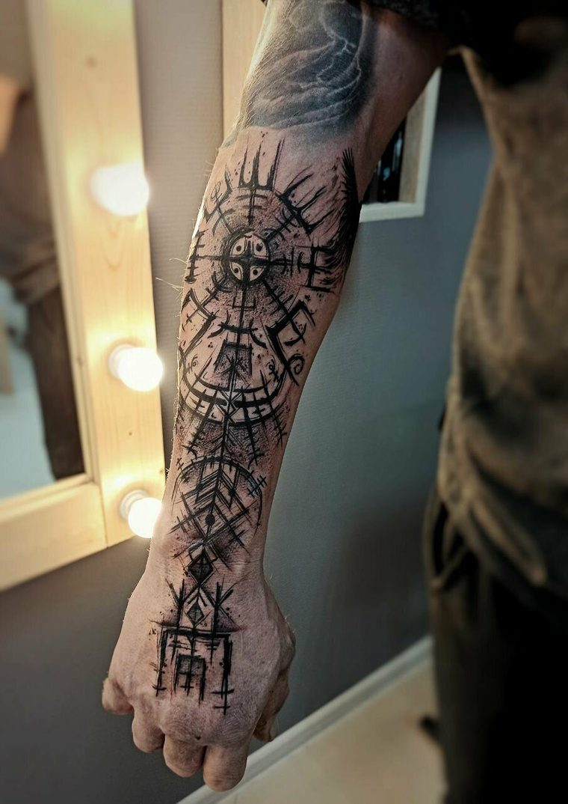
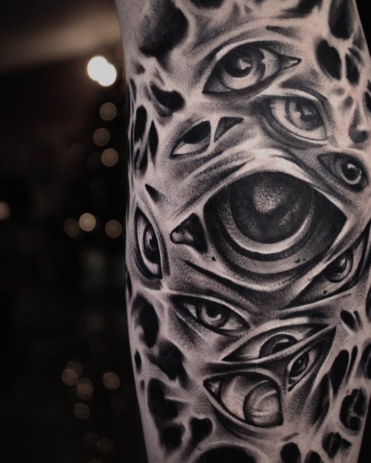
13♠♠ Работы
Работы мастеров студии. Большие проекты делают за несколько сеансов, эскиз рисуют под вас.
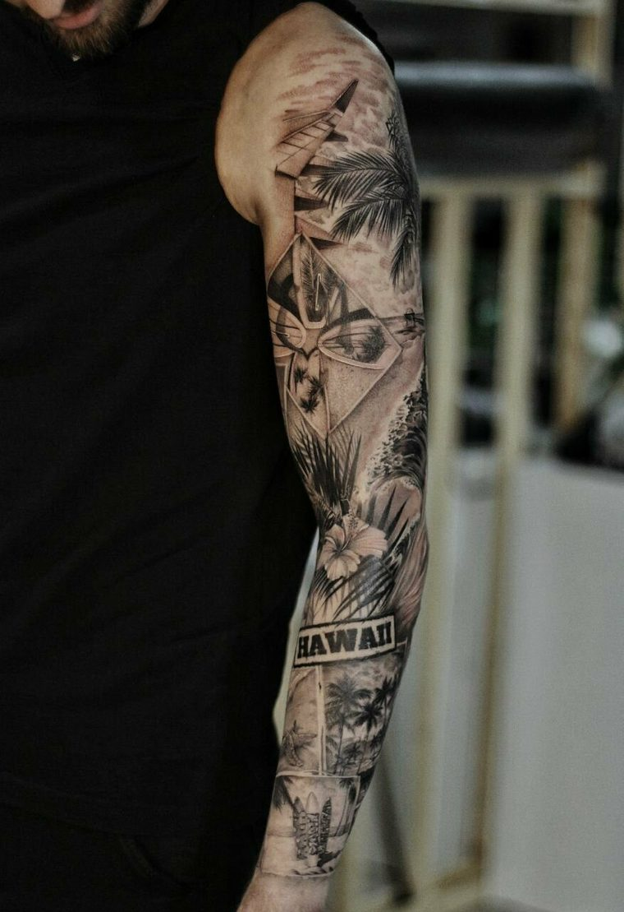
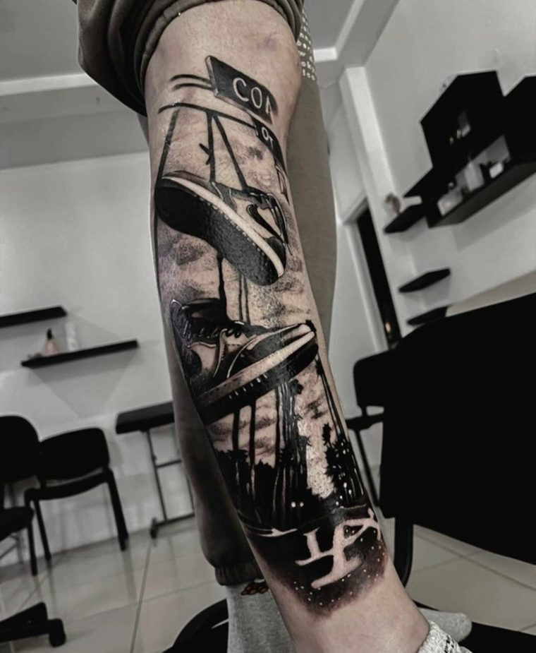
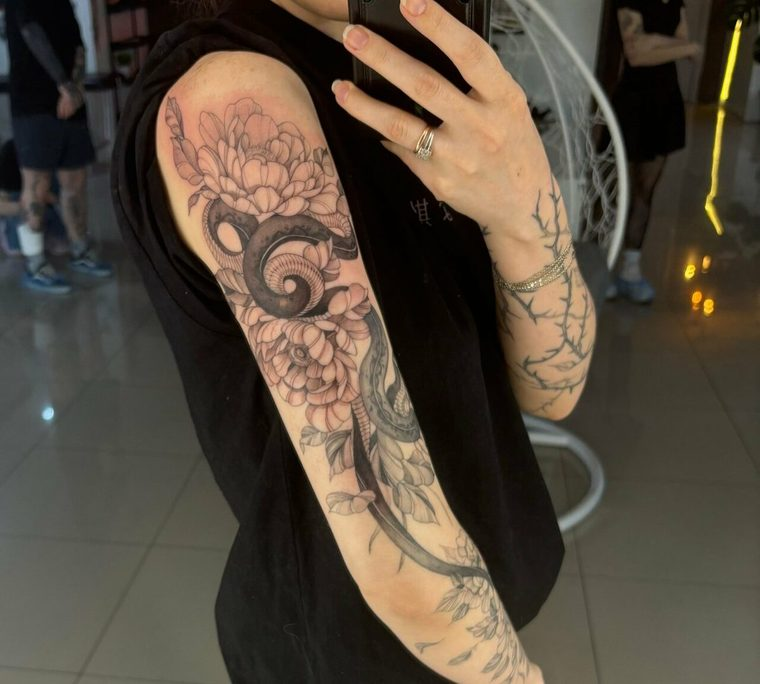
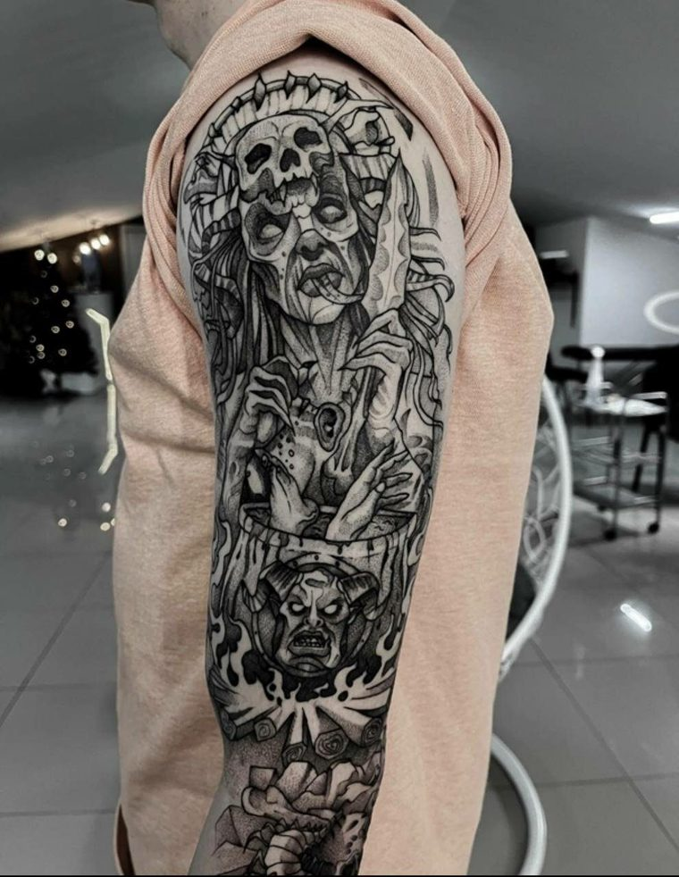
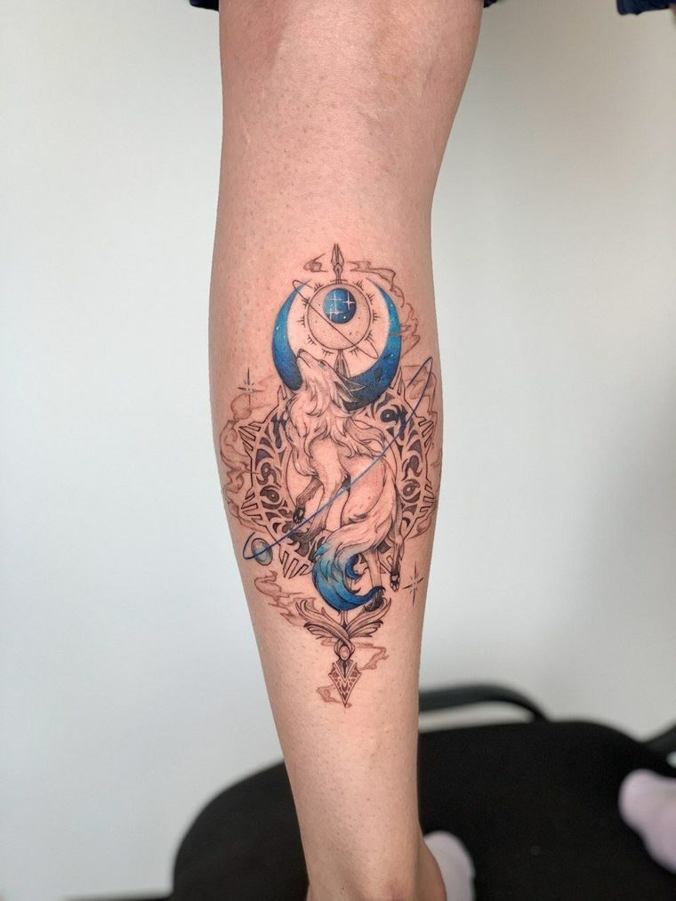
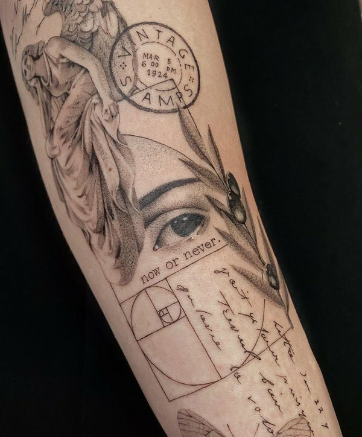
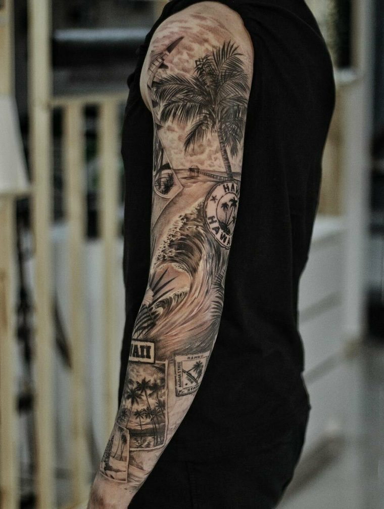
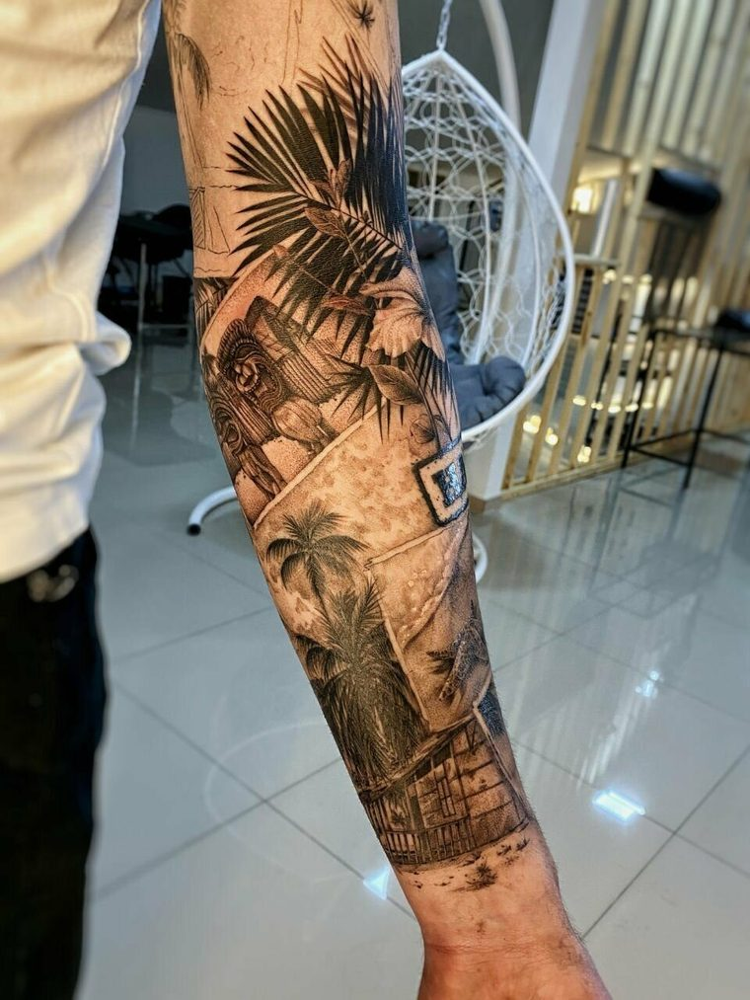
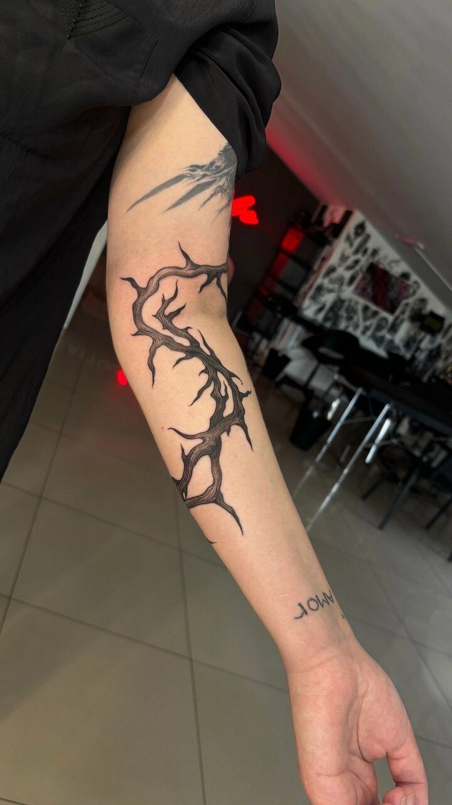
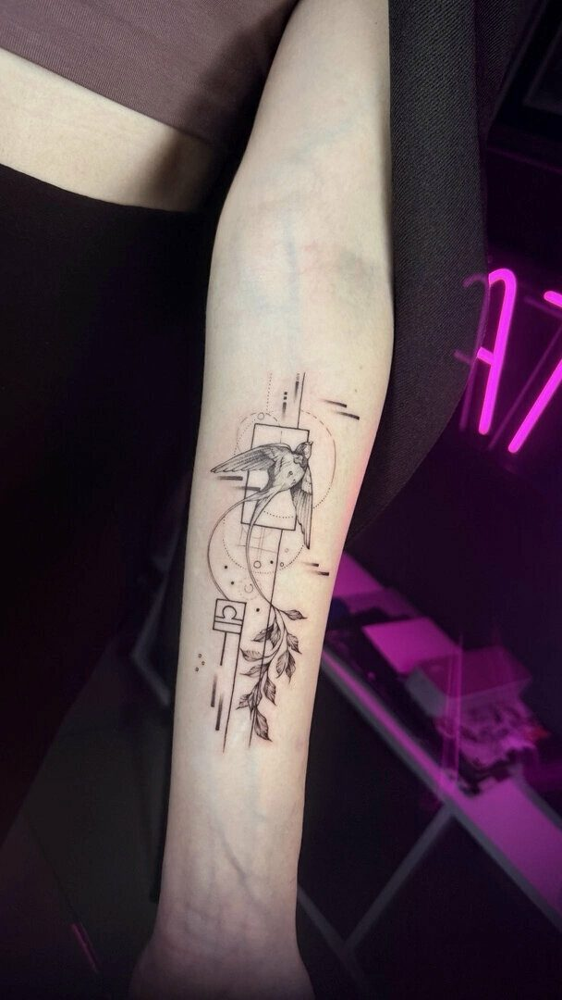
Больше работ — в группе ВКонтакте Открыть ВКонтакте
♠ Мастера
В студии работают мастера разных стилей. Напишите, какая работа понравилась, и администратор подскажет, к кому идти.
Эскизы под задачу, перекрытие старых татуировок
«Антон предложил несколько вариантов для перекрытия, вместе выбрали. Теперь на месте старой татуировки зарождается новая»Юлия Белая, 2ГИС
Эскиз со слов, если готовой идеи нет
«Выяснилось, что не обязательно приходить к мастеру с готовым эскизом, можно просто описать словами, что нравится»Константин Г., Яндекс Карты
Эскиз прямо на месте, тонкая работа
«Можно придумать на месте, а мастер создаст эскиз со слов. Глеб, респект»Отзыв на Яндекс Картах
Пирсинг и подробный рассказ про уход
«Сегодня делала пирсинг, всё подробно рассказал, как ухаживать. Приду ещё раз, однозначно!»Милена Швед, Яндекс Карты
Сделал классный эскиз с учётом всех моих пожеланий. Объяснил, как будет смотреться татуировка со временем. На каждом этапе давал советы. Вышло так, как я и думала.
Ярослав 5+++++, спокойный, уверенный, прекрасный собеседник и отличный мастер! Тату сделано каллиграфически аккуратно и как хотелось.
Если важно качество и главное авторство работы на вашем теле — вам сюда однозначно!
Замечательный салон, атмосферный, уютный, чистый. Очень удобное расположение, но самое главное — прекрасные мастера. Спасибо Антону за память на теле и комфортный сеанс!
Мастер сделал всё нереально быстро и аккуратно. Качество тату просто шикарное, это теперь моя лучшая тату.
Место, где знают всё о татуировках: много мастеров разных стилей.
♠ Студия
Светлые рабочие места и зона отдыха. В отзывах чаще всего пишут про спокойную обстановку и чистоту.
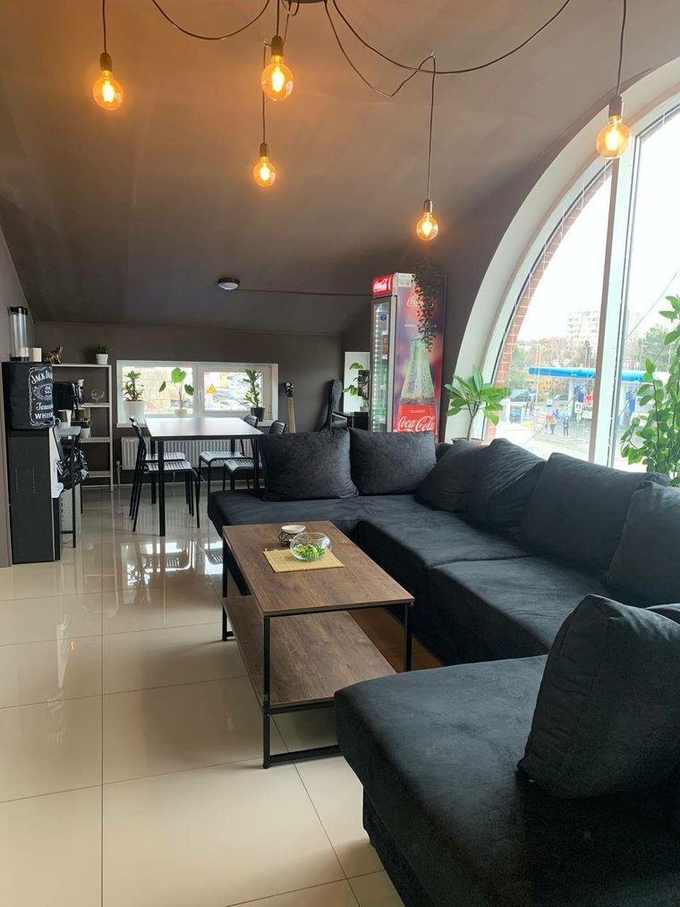
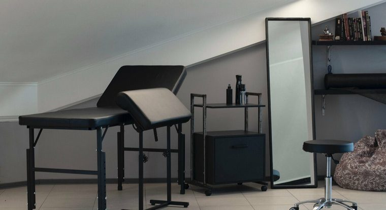
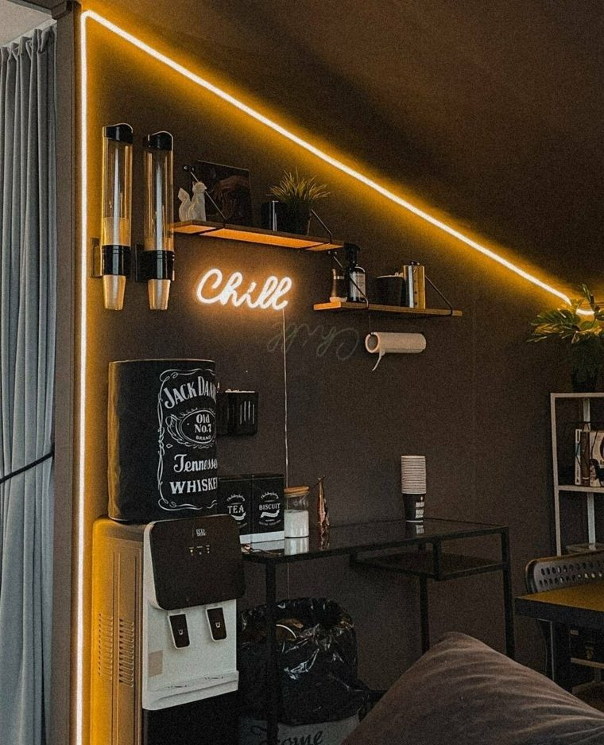
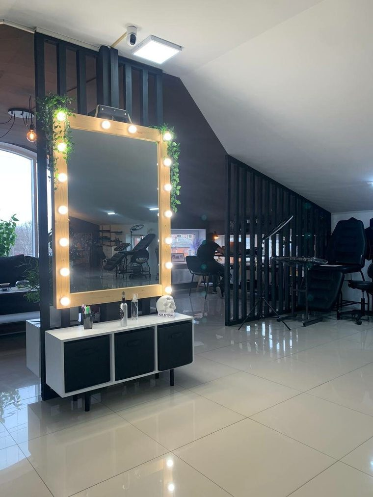
♠ Запись
В WhatsApp или Telegram: что хотите, где на теле, примерный размер. Готовый эскиз не нужен, можно описать словами или прислать картинки, которые нравятся.
Мастер предложит эскиз и время сеанса. Для перекрытия пришлите фото старой татуировки: мастер покажет варианты.
Приходите на сеанс. После мастер расскажет, как ухаживать за татуировкой.
♠ Контакты